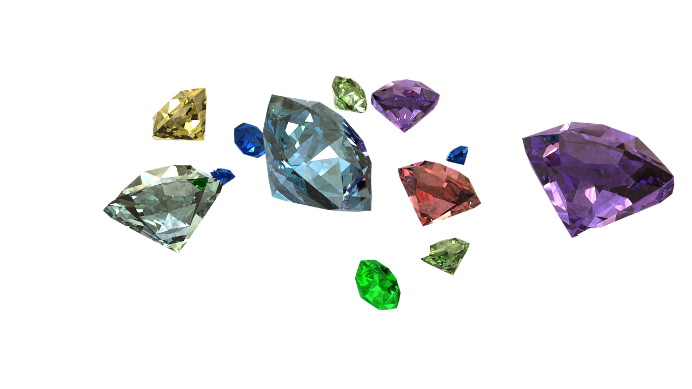
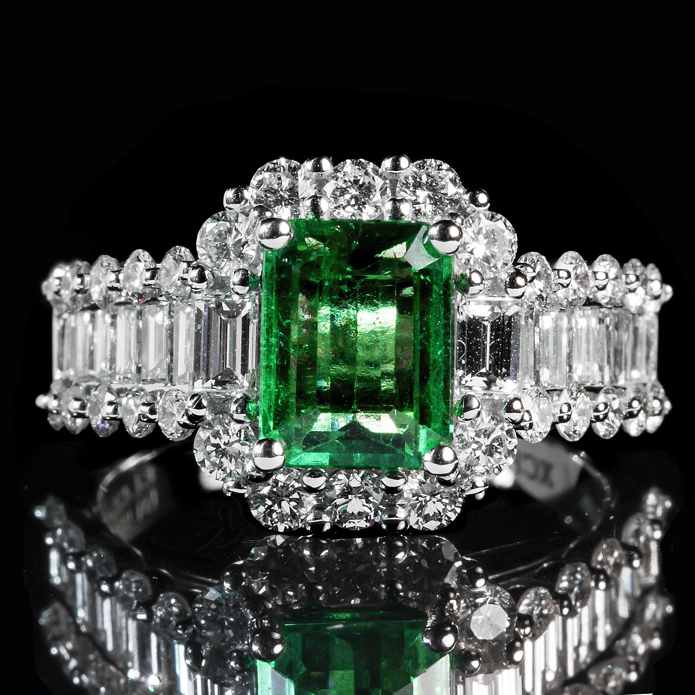
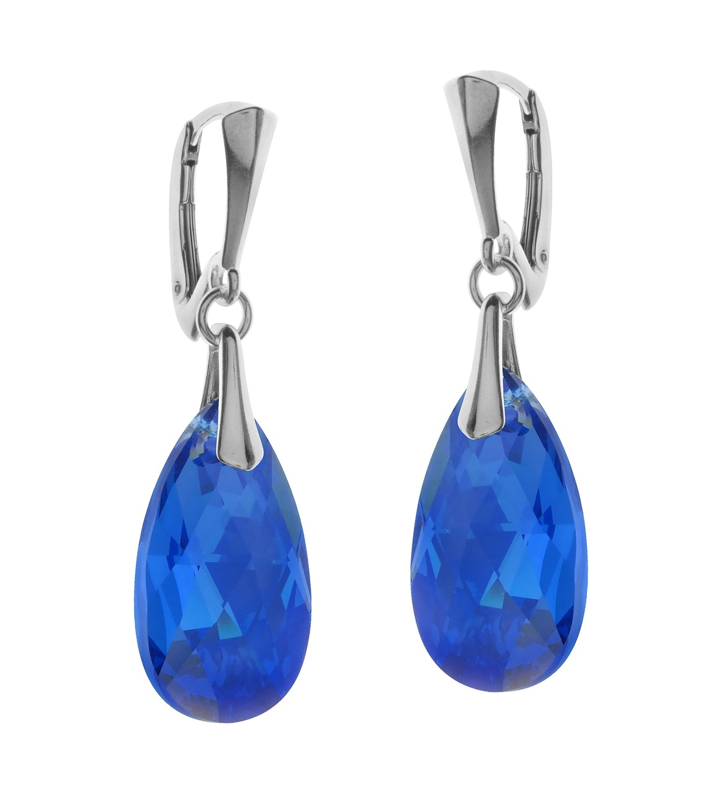
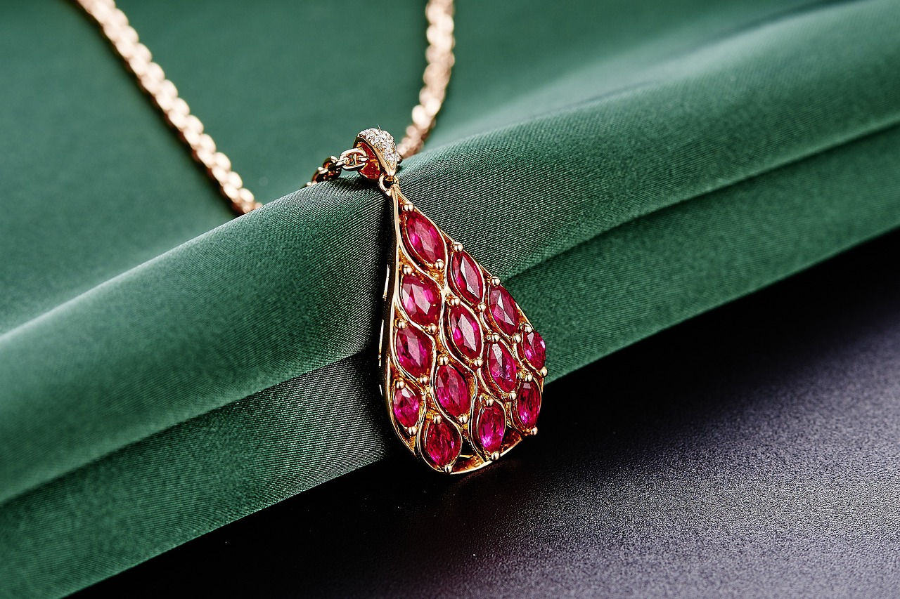

Types of Jewels
There are many different varients of jewels, and they each have something about them that sets them off from most other gems. Some jewels could be made from the same mineral as others but with a different color while others have mineral composition that is very different, yet their colors look exactly the same. Because of this, some gems can be mistaken for others if you don't look closely at them.
Emeralds
Emeralds are beautiful dark green jewels and are among the most desired gemstones in the world. Coming from a colorless mineral known as beryl, it is similar to aquamarine aside from the color. It is also very brittle, so it has a special rectangular cut to make it more durable. Due to the numerous internal flaws that each one has, no two emeralds are even remotely alike. They are some of the best choices for jewelry and are found numerously in Columbia, Brazil, and a few African countries
Diamonds

Diamonds are the most well-known out of all jewels because of their rarity and dazzling beauty. It's no secret as to why they are used in so much jewelry, but that's only one of its uses. They happen to also be one of the strongest materials known to man. Some are even used in oil drilling, specialized scalpels, tool manufacturing, and many other industrial uses. It was originally found only as crystals in the river banks of India until 1725. Around that time, the valueble gems were discovered in a volcanic rock known as kimberlite in South Africa. Today, most diamond mining tacks place in South Africa, Siberia, and Australia, along with some sites being recently discovered in Canada, China, and the United States.
Sapphires
The dark ocean-blue color possessed by sapphires make them easily eye-catching. Their corundum makeup gives them a hardness close to that of diamonds, but they don't have a use in industry, so they're most often used in jewelry and decoration. While their main color is dark blue, they've also been known to be other colors, such as yellow, green, or even pink. Before the end of the 19th century, geologists learned that sapphires of all colors were the same mineral. The naming terminology of the gem still persisted from the Middle Ages, as green sapphires were called Oriental peridot, and yellow sapphires were Oriental topaz. Sapphires are mostly found in countries around the Indian ocean such as India, Kenya, Madagascar, and Austrailia.
Rubies
Being made up of corundum, rubies share the same chemical makeup as sapphires. What seperates the two is the well-known dark red color that rubies have. Their luxurious bloodlike color is what makes them such widely desired jewels. Rubies are sometimes tinged with purple, and their color can range from deep cochinel to pale rose red. Rubies can be found in many countries around the world, such as Columbia, Kenya, Austrailia, and the United States.